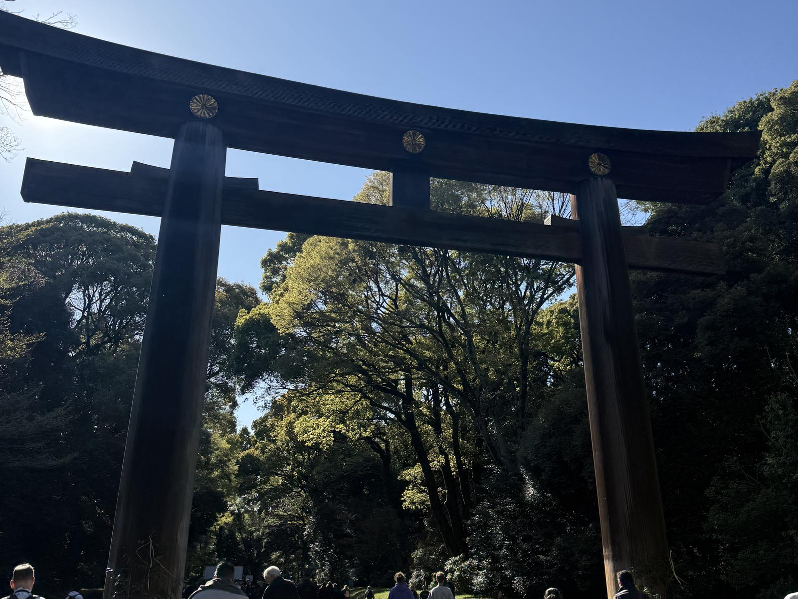
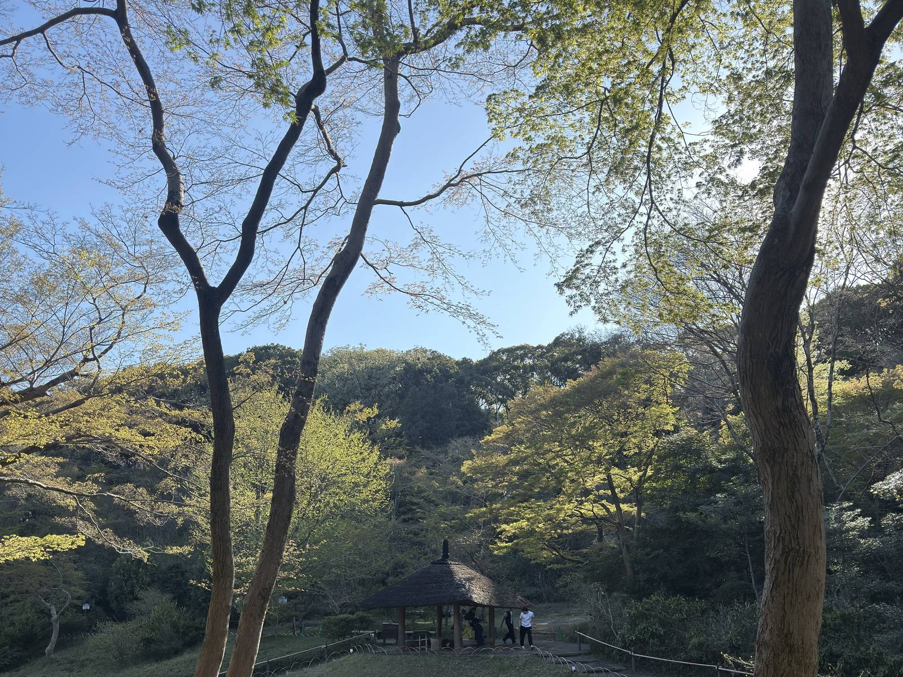
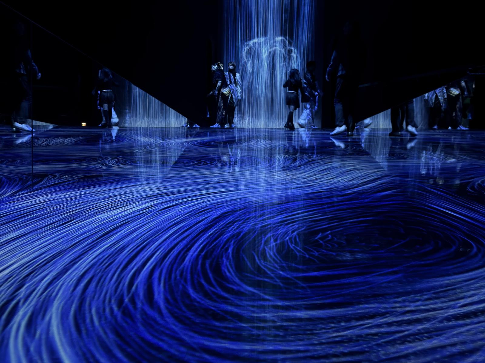
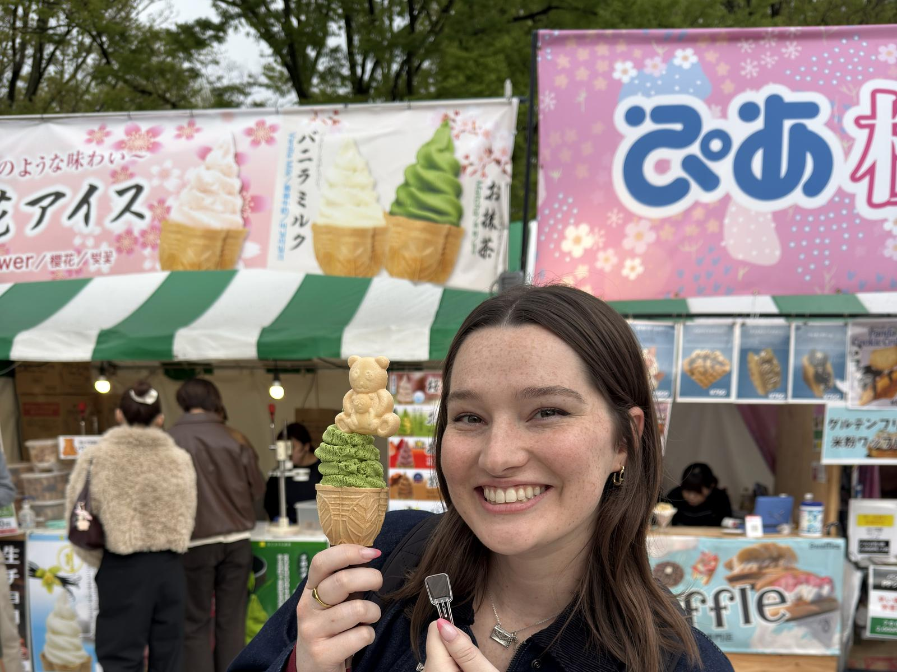

The trip, day by day
Timeline
Ten days, start to finish. Tap any day to open it. On a phone the days start collapsed so you can scan the shape of the trip first, then dig into whatever catches your eye.
Day 1 March 31 Travel day
Wheels down at Haneda in the early afternoon. The airport is huge, but getting to the monorail is genuinely simple once you know what you're looking for — we leaned on a short walkthrough video the whole way to the platform, and it took the guesswork out of that first disoriented half hour.
From the monorail we changed to the Yamanote Line and were checked in before we knew it. Sarah crashed to sleep off the flight; Zach went out to wander the neighborhood streets and get a first read on the place. Dinner was our first real meal in Japan: ramen at Super Oreryu, ordered off a touchscreen kiosk with an English menu that took a card. If you're nervous about that very first order in a new country, this is the gentlest possible landing.
Day 2 April 1 Local shopping Rain
Rain all day, so we kept it close and low-key. Breakfast at Eggs 'n Things, then straight into Don Quijote — which is a whole experience, packed floor to ceiling with everything you didn't know you wanted. A mid-afternoon nap (jet lag wins sometimes), ramen again because we'd already fallen for it, then more browsing at Shibuya 109 and Uniqlo.
Day 3 April 2 Shopping, park & cat café
We started building a habit on this day: a quick "first breakfast" at the Starbucks inside the station for fast calories before heading out, then a proper "second breakfast" of soufflé pancakes at Flippers. From there, character-store heaven — the Disney, Star Wars, and Nintendo flagships — before walking it all off in Yoyogi Park and up to Meiji Jingu shrine. A genuinely lovely day to be on foot.


Afternoon pick-me-up at Cat Café Mocha, then dinner at Sake & Fish Uofuji — which we'd honestly tell you to skip (upstairs, smoking section). We ended the night walking the cherry blossoms down Sakurazaka Street, which more than made up for it.
Day 4 April 3 Sightseeing & Hakone day trip
Tokyo Tower in the morning, a quick, satisfying katsu lunch at Katsuya, then out to Hakone for a day trip — including the Hakone Ropeway, with those wide-open views back toward the mountains. We came back into the city for a nicer dinner at Emblem Flow.
Worth flagging: this was a day trip. We also did a separate overnight in Hakone later (Days 6–7). Doing both isn't redundant — the day trip is about the ropeway and the views; the overnight is about the onsen. We break down which one's right for you on the Sights page.
Day 5 April 4 Museum day
Our densest day. teamLab Planets first thing — wade-through-water, walk-through-light, genuinely unlike anything else. Sushi lunch at Sushi Yasuke, then the National Museum of Nature and Science, which happily ate a couple of hours. We stumbled into a festival in Ueno Park and made dinner out of the food carts, then closed the night with Akihabara's neon and a look up at Tokyo Skytree.


Day 6 April 5 Hakone, overnight
Out to Hakone the comfortable way — a reserved seat on the Romancecar, which is worth it for a longer trip so you're not standing or scrambling between transfers. Dinner was easy pizza at PUB STOP, and then the whole point of the night: the onsen at Tonoyu Setsugekka, with a private hot tub on our own balcony. Slow, quiet, exactly what the middle of a big trip needs.
Day 7 April 6 Return from Hakone
A deliberately slow start — breakfast at the onsen, more time in the water, no rush. Back in Tokyo we went straight to Uobei for conveyor-belt sushi, and it quietly became our favorite meal of the whole trip: fast, absurdly affordable, and better than it has any right to be.
Day 8 April 7 Palace, Ginza & gift-hunting
The Imperial Palace outer grounds are free and open to everyone; the inner grounds are free too but need an advance reservation. Learn from our mistake here — construction blocked the recommended route and we missed our tour slot. Give yourself a lot more buffer than you think you need.
Reserve the inner-grounds tour ahead, and arrive at the palace well before your slot. Signage and re-routes can eat 15–20 minutes you didn't plan for.
We split up for the afternoon to knock out gifts in different neighborhoods, wandered Ginza, and — key move — bought our checked suitcase there. We'd flown over carry-on only and always planned to buy a bag to fill with souvenirs for the trip home. Highly recommend traveling this way. Dinner was Uobei. Again. No regrets.
Day 9 April 8 Disney day
We gave a full day to Tokyo Disney Resort — DisneySea in the morning, Disneyland in the afternoon — and came away with strong opinions about how we'd do it differently. There's enough here that it gets its own page: the verdict, the app, the surprisingly tricky bus from Shinjuku, and the FastPass strategy that made the day work.
Day 10 April 9 Shibuya Sky & home
Packing day, with one last loop through the Shibuya spots that had started to feel like home. We went up to Shibuya Sky for a wide, clear look over the neighborhood we'd been living in — do this first or last, either way it's a perfect bookend.
With the new checked suitcase plus our carry-ons, we skipped the train back and took the airport limousine bus instead: it picked us up at the hotel door and dropped us right at the terminal. A calm, low-stress way to end a big trip. Then HND → LAX, and home.